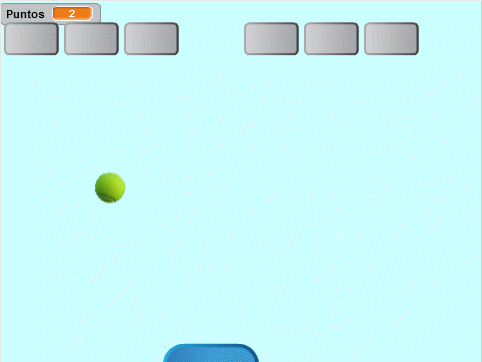
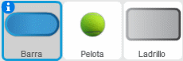
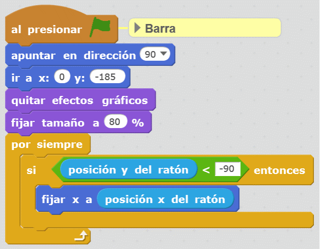

6. Romper ladrillos¶
{kind=link}
En esta práctica vamos a programar un juego que consiste en romper ladrillos con una pelota que rebota en una barra. Cada ladrillo roto nos dará un punto.
Iniciamos el editor de Scratch.
Borramos el gato presionando sobre él con el botón derecho del ratón y luego pulsamos borrar.

Añadimos tres personajes nuevos. Un botón azul, una pelota de tenis y un botón gris.
A continuación cambiaremos los nombres de los tres nuevos personajes pulsando el botón azul "i" de cada uno de los personajes.
Al botón azul le nombraremos barra.
A la pelota de tenis la nombraremos pelota.
Al botón gris le nombraremos ladrillo.
Ahora crearemos la variable Puntos.
Dentro de la pestaña Datos
 ,
,pulsamos crear una variable

Cambiamos el nombre de la variable a Puntos

Por último pulsamos el botón OK
Esta variable va a almacenar los puntos que conseguimos rompiendo cada ladrillo.
Ahora crearemos la variable position.
Dentro de la pestaña Datos
,pulsamos crear una variable
Cambiamos el nombre de la variable a position
Esta variable va a almacenar la posición de cada uno de los ladrillos al iniciar el programa.
Ahora añadiremos el programa de la Barra.
Primero seleccionamos la Barra y luego la pestaña programas.
Añadimos los siguientes bloques.
A continuación añadiremos el programa de la Pelota.
Primero seleccionamos la Barra y luego la pestaña programas.
Añadimos los siguientes bloques.


Por último añadiremos el programa del Ladrillo.
Primero seleccionamos el Ladrillo y luego la pestaña programas.
Añadimos los siguientes bloques.


Ahora probaremos que todos los programas funcionan correctamente jugando una partida.
{kind=link}
Ejercicios¶
- Modifica el programa para que aparezcan más ladrillos en la parte superior.